Poseidon Cup 2018 : les podiums
Les podiums de la Poseidon Cup 2018 et les remerciements du club aux bénévoles, aux clubs et aux arbitres.
Toute la vie du dojo, année par année. Les stages, les compétitions, les moments du club et les infos pratiques.
Les podiums de la Poseidon Cup 2018 et les remerciements du club aux bénévoles, aux clubs et aux arbitres.
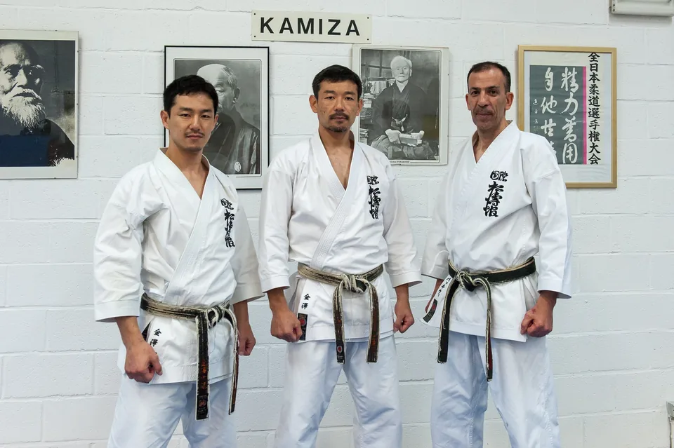
Une photo de stage publiée en 2018.
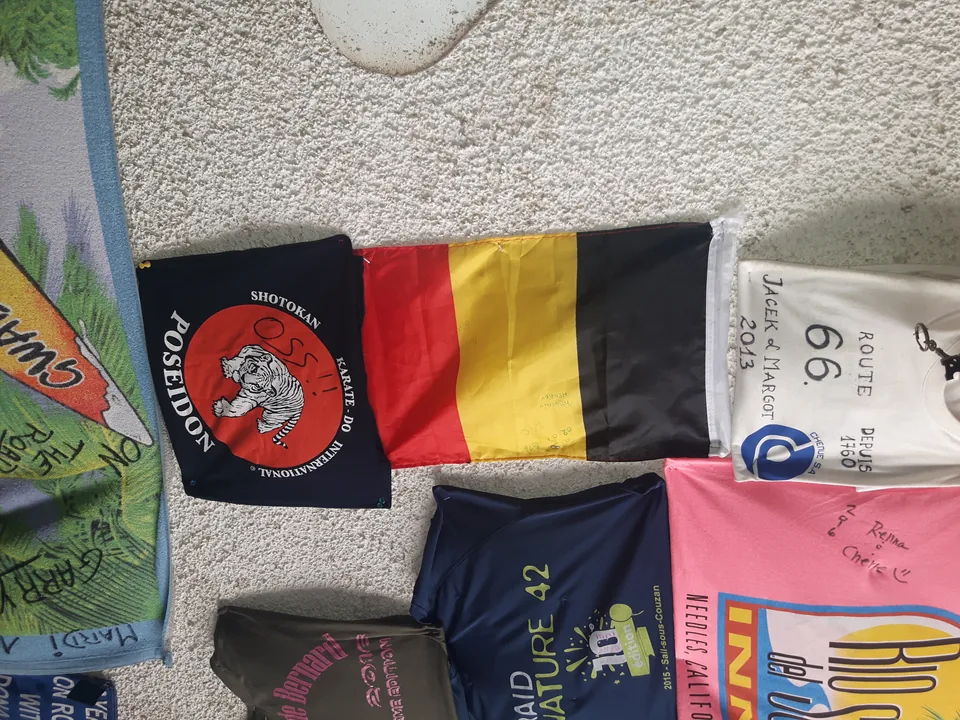
Une deuxième série de photos du dojo publiée en 2018.
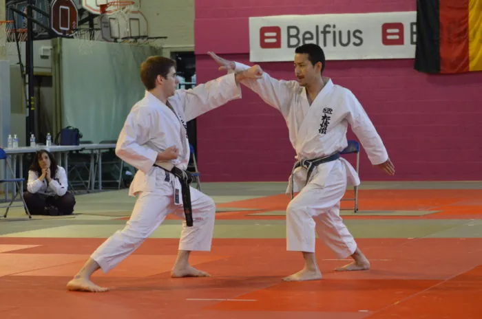
Une photo publiée sans texte sur l'ancien site.
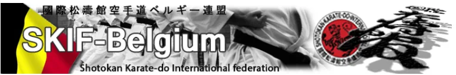
La liste des clubs SKIF Belgium telle que publiée en 2018.
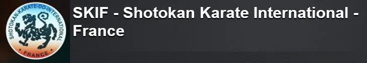
Liens vers les organisations SKIF, tels que publiés en 2018.
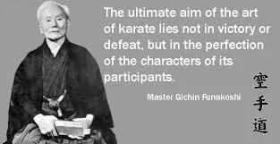
L'équipe d'instructeurs telle que publiée en 2018.
Une série de photos du dojo publiée en 2018.
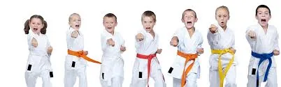
La grille horaire et l'équipe d'instructeurs de la saison 2018.
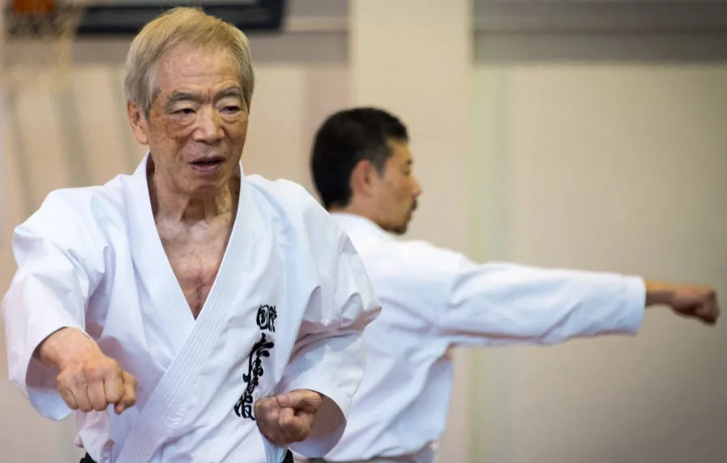
Portrait du fondateur de la SKIF, dernier élève direct de Gichin Funakoshi.
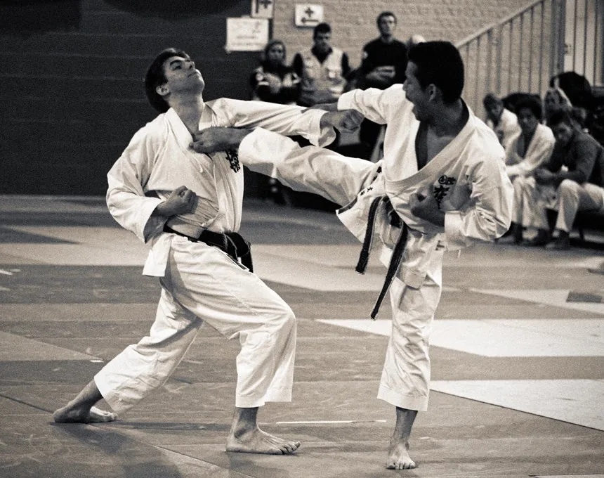
L'équipement, les bienfaits pour la santé et les âges pour débuter le karaté.
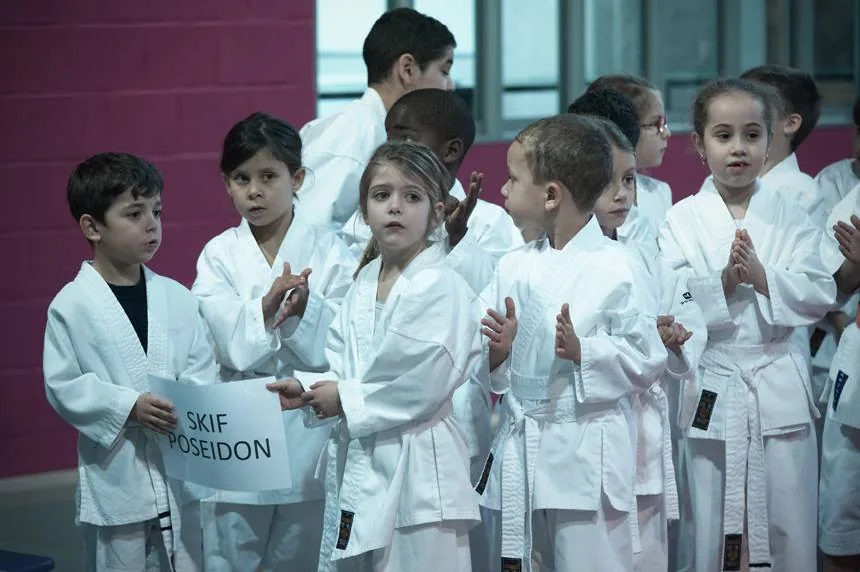
Les démarches d'inscription au dojo telles que publiées en 2018.
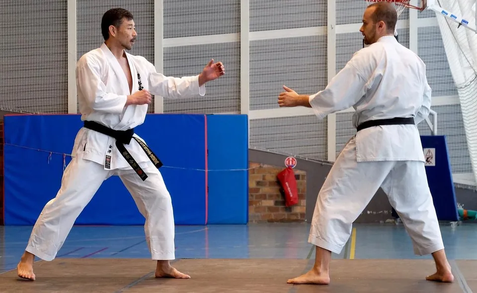
Portrait de Nobuaki Kanazawa, 8e dan, fils aîné de Kanazawa Soke et Kancho de la SKIF depuis avril 2014 (selon SKIF Belgium).
Portrait de Manabu Murakami, 8e dan, instructeur en chef de la SKIF et champion du monde de kumite en 1991 et 1994.
Aucun article de ce type en 2018.